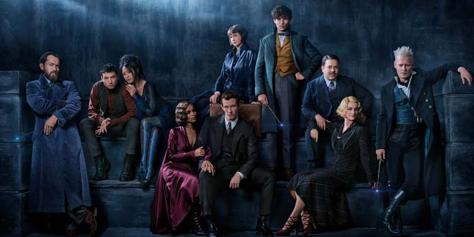
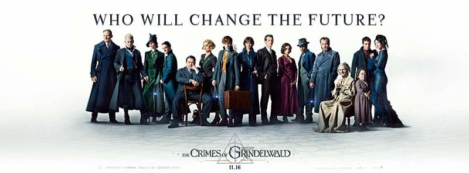

Fantastic Beasts: The Crimes of Grindelwald Review by Abhijith A G

Posted By : Abhijith A G | Date : 17-11-2018
Genre:- Drama/Fantasy
Language: English
Year: 2018

Fantastic Beast Where to Find Them എന്ന 2016 ലെ സിനിമയുടെ രണ്ടാം ഭാഗവും കൂടാതെ Harry Portter സീരിസിന്റെ spin off & Prequal കൂടിയായ Fantastic Beast സീരിസിലെ രണ്ടാമത്തെ സിനിമ ആണ് Fantastic Beasts : The Crimes of Grindelwald.

ഡാർക്ക് വിസാഡായ Grindelwald (Johny Depp) അമേരിക്കൻ മാജിക്കൽ കോൺഗ്രസിന്റെ തടവിൽ ആണ്. അവിടെനിന്നും ലണ്ടനിലേക്ക് കൊണ്ടുപോകുന്ന വഴി അയാൾ രക്ഷപെടുന്നു.ആദ്യസിനിമയിൽ കാണിക്കുന്ന ന്യൂയോർക്ക് സിറ്റിയിലെ നടന്ന പ്രശ്നങ്ങൾ കാരണം Newtനു അവിടേക്കു തിരിച്ചു പോകാനായി കഴിയുന്നില്ല. Credence Barebone എന്നൊരാളെ കണ്ടുപിക്കാനായി മിനിസ്ട്രി ഓഫ് മാജിക്ക്നെ സഹായിച്ചാൽ തിരിച്ചു ന്യൂയോര്കിൽ പോകാൻ അനുവദിക്കാം ഏന് മിനിസ്ട്രി ഓഫ് മാജിക്കു പറയുന്നു. എന്നാൽ Newt അവരുടെ ഓഫര് നിരസിക്കുന്നു. ഇതേ ആവശ്യമായി അവന്റെ പ്രൊഫസർ Albus Dumbledore വരുമ്പോൾ അവനു അത് സ്വികരിക്കേണ്ടി വരുന്നു. അതെ സമയം മിനിസ്ട്രി ഓഫ് മാജിക് മറ്റൊരാളെ ഇതേ ജോലി ഏല്പിക്കുന്നു. ഡാർക്ക് വിസാഡ് Grinderwald ഇതേ Credence Barebone അനേഷിച്ചു ഇറങ്ങുന്നു.
ആദ്യ സിനിമയിലെ പോലെ നല്ലൊരു കഥ ഇ ചിത്രത്തിന് ഇല്ല. ജോണി ഡീപ്പ് ഇന്റെ ഡാർക്ക് ക്യാരക്റ്റർ എന്നത് ഒഴിച്ച് നിറുത്തിയാൽ അദ്ദേഹത്തിനും കാര്യമായി ഒന്നും ചെയ്യാനില്ല.ഹാരി പോർട്ടർ സിനിമയിലെ കുറച്ചു ക്യാരറ്റർസ് ഇതിൽ വരുന്നുണ്ട്. ആദ്യ ചിത്രത്തിൽ ചിരിപടർത്തിയ Newtന്റെ മാജിക്കൽ ജീവികൾക്ക് ഇതിൽ കാര്യാമായ റോൾ കൊടുത്തിട്ടില്ല.ചിത്രം 3D യിൽ ആയിരുന്നില്ല ഇവിടെ റിലീസ് ഇന്നിപ്പോൾ 3D യിൽ ആയാലും ഇതിൽ അങ്ങെനെ 3Dയിൽ ആസ്വദിക്കാനായി ഒന്നുമില്ല. Fantastic Beasts മൊത്തം അഞ്ചു സിനിമകൾ ചേരുന്ന സീരിസ് ആയിട്ടാണ് ഇറക്കുന്നത്.അതിലേക്കു ചേർത്ത് വയ്ക്കാൻ ഒരു സിനിമ മാത്രമാണ് ഇത്. തീർത്തു ആവറേജ് അനുഭവം.
My Rating : 2.5/5
You can check everything tou wanna know about the movie from: FantasticBeastsTheCrimesofGrindelwald